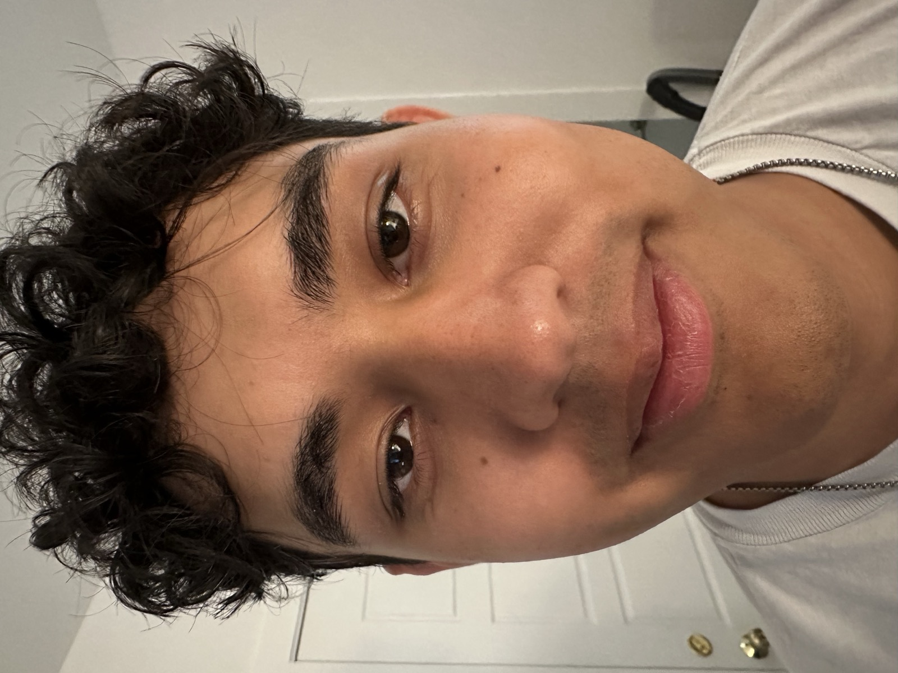
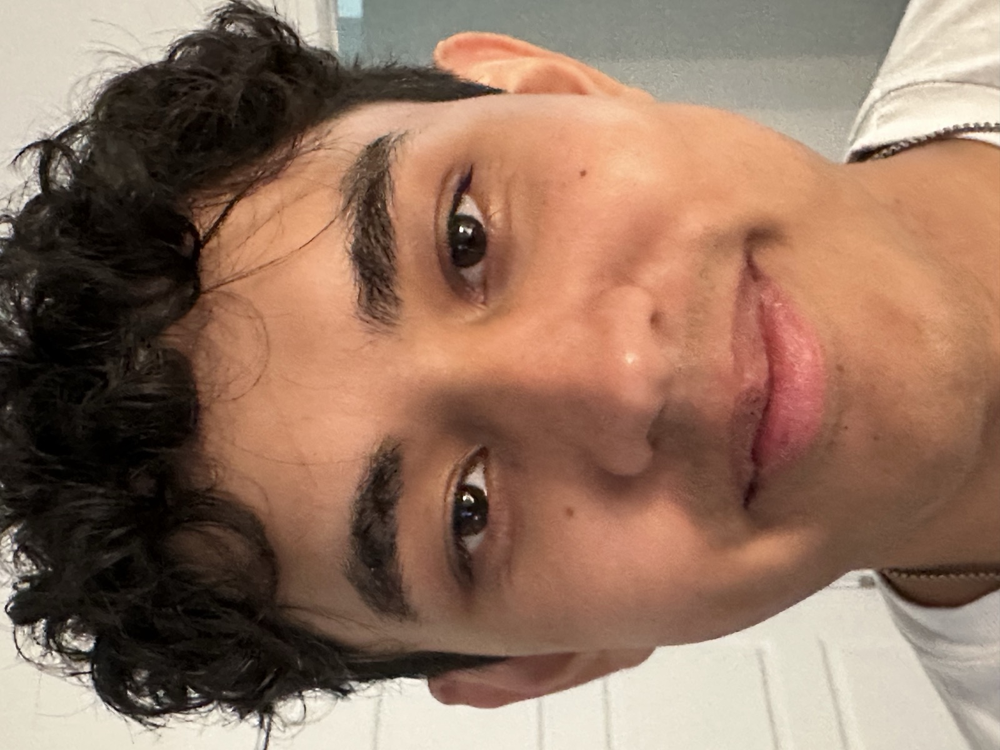
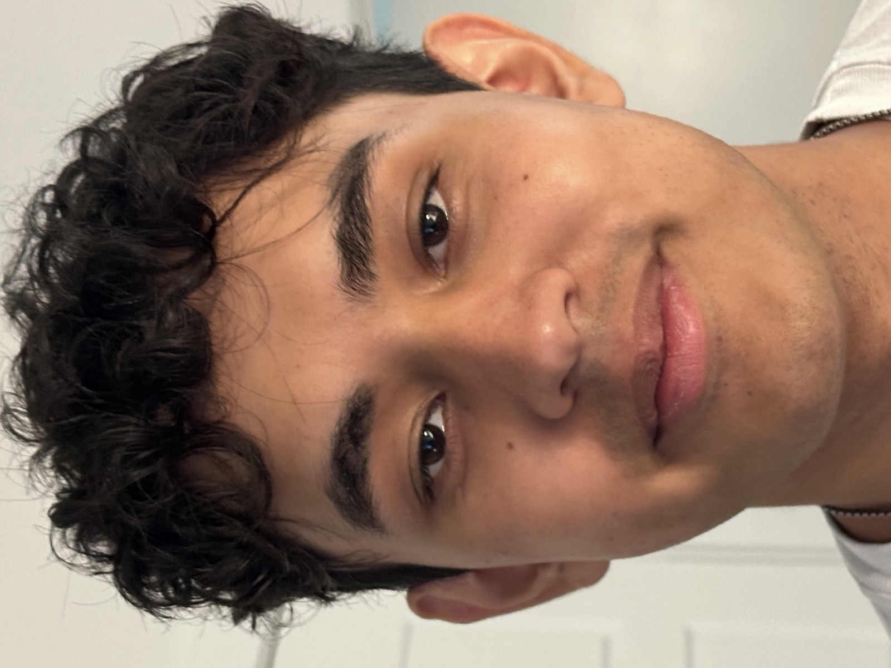
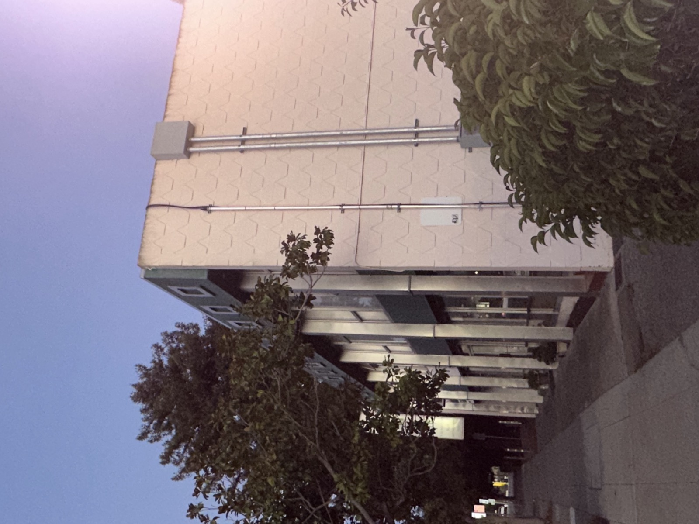
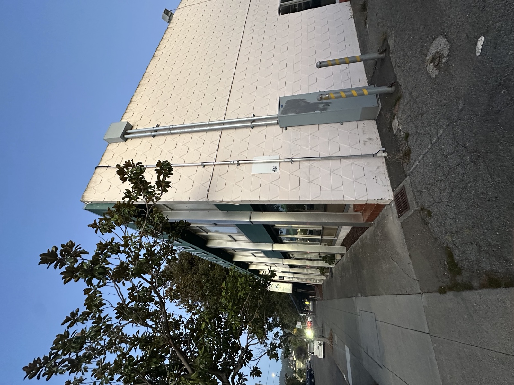
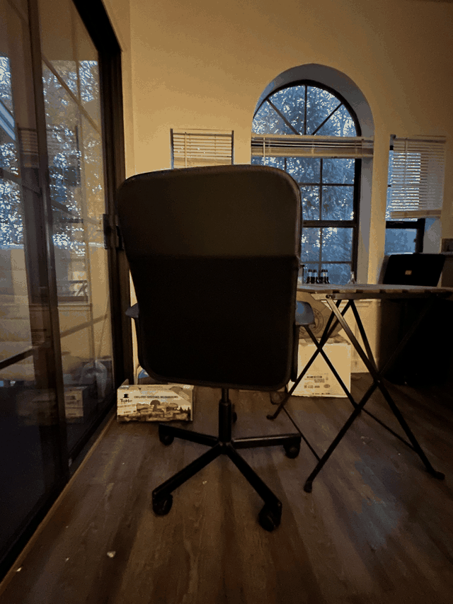

Part 1: The Camera Lie
A close-up portrait taken with a wide focal length distorts facial features, while stepping back and zooming in to match the subject's size compresses those same features. The three photos below walk through that progression.



Part 2: Architectural Perspective
The same building photographed from far away with zoom appears compressed, while walking up close without zoom exaggerates depth.


Part 3: The Dolly Zoom
Moving the camera backward while zooming in keeps the subject the same size but warps the background — the classic "Vertigo effect." The GIF below combines three sequential frames into that animated effect.
